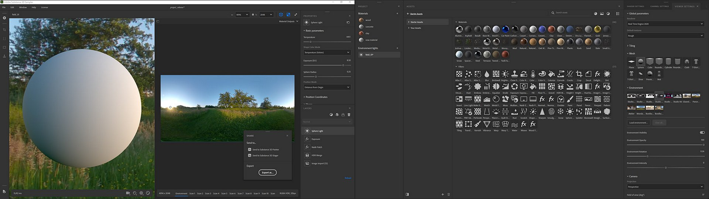
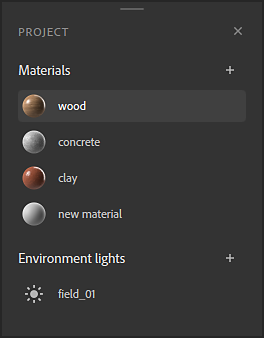
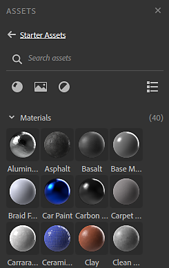
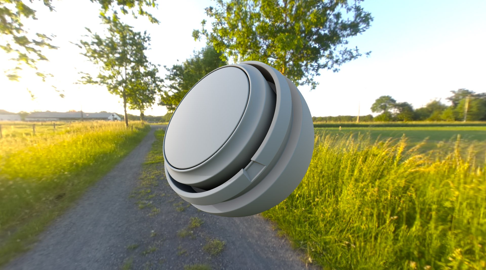
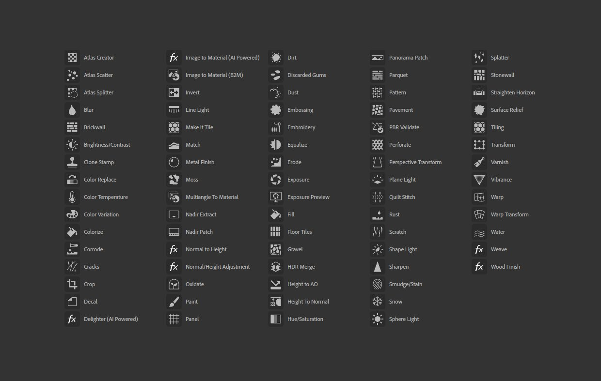
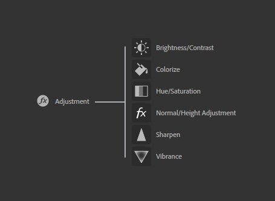
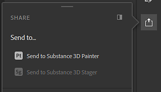

Substance 3D Sampler 3.0.0 is the new name for Substance Alchemist now that it's connected to Adobe Creative Cloud. It brings a complete UI rework, support for creating Environment Lights, fully reworked and new filters, Send To functionality and ASM shader support.
Release date: 23 June 2021
With a new name, comes a new look. Sampler's UI has been completely revamped to allow for more customization and easier access.

Panels can be docked and undocked, letting you fully utilize a dual screen set up.

Sampler now works with projects. The Project panel lets you manage and group your assets per project. Projects are stored in Substance Sampler files, easily shared.

The asset panel is a new and common design of the Resources panel, combined with your collections.

Sampler now lets you make more than just materials. Environment Lights are a new type of asset with their own set of filters. Start from bracketed 360 photo's, build an environment light from scratch, or edit an existing HDR file.

All existing filters have been reworked:
The Adjustment Filter has been split into separate filters based on functionality, to mimic Photoshop:

A few new filters have been added:

Sampler can now easily share materials and light environments with Substance 3D Painter and Stager, in just a single click.
Below are our video tutorials covering the new features:
(Released June 23, 2021)
Added:
Known Issues: